{kind=link}
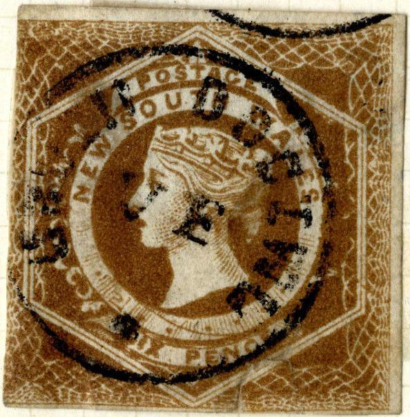
{kind=link}
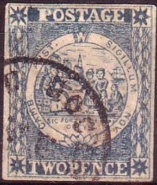

New South Wales
Return To Catalogue - Forgeries with 'Correos' cancels
Note: on my website many of the
pictures can not be seen! They are of course present in the
catalogue;
contact me if you want to purchase it.
A forged cancel consisting of a single circle "VF" in the center, a large dot at the bottom and an unreadable text in the outer part can be found on many forgeries of many different countries. It is not clear who applied this cancel. The article on http://www.bondskeuringsdienst.nl/VFstempel.pdf by Hans J.A.Vinkenborg attibutes it to the forger Spiro. The forgeries of Brazil with this cancel are generally attributed to the forger Zechmeyer. Could "VF" stand for "Venturini Florence" or even "Usigli Florence"?
Many of the basic forgeries appear to be Spiro forgeries though. I've seen many 'normal' Spiro forgeries in sheets of 25 stamps. However, I have never seen sheets or even multiples with this VF cancel.
 
New South Wales
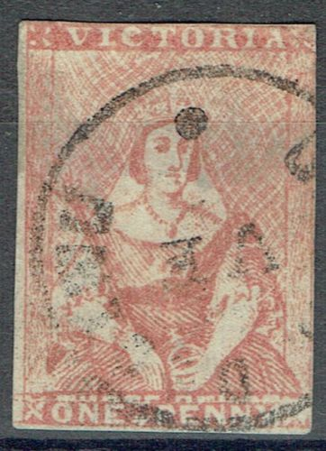
Victoria
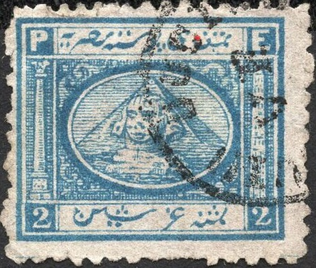
Egypt
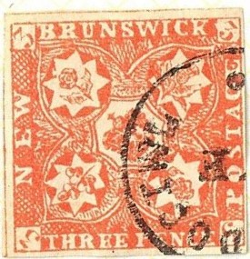
New Brunswick
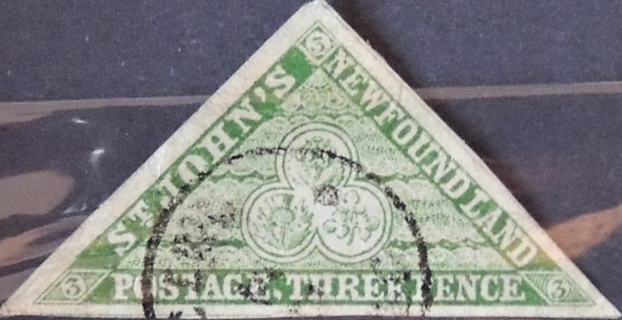
Newfoundland
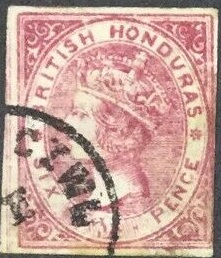
British Honduras
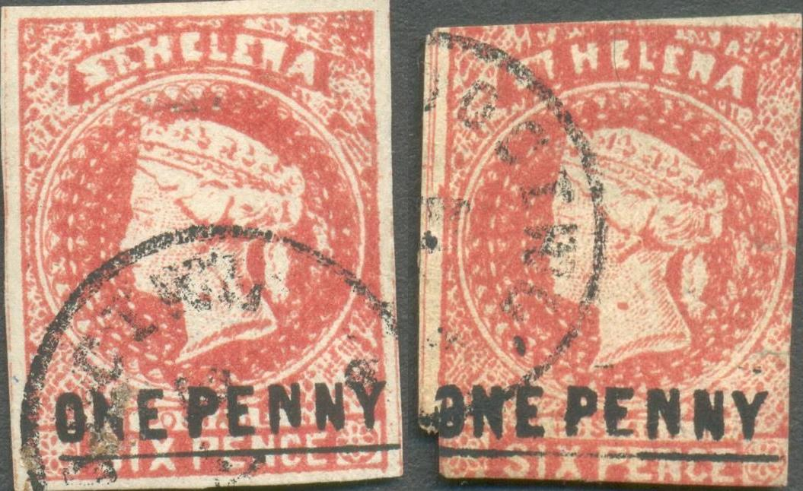
St.Helena
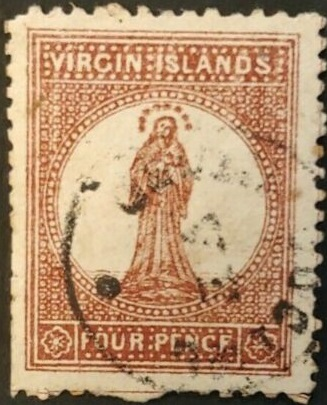
Virgin Islands
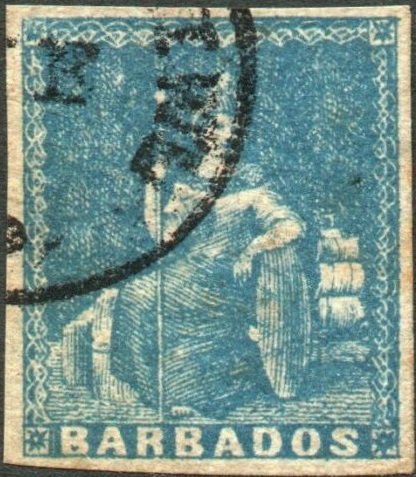
Barbados and St.Lucia
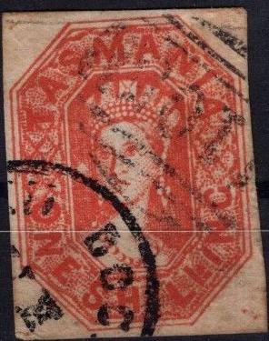
Tasmania.
{kind=link}
{kind=link}
{kind=link}
{kind=link}
{kind=link}
{kind=link}
{kind=link}
{kind=link}
{kind=link}